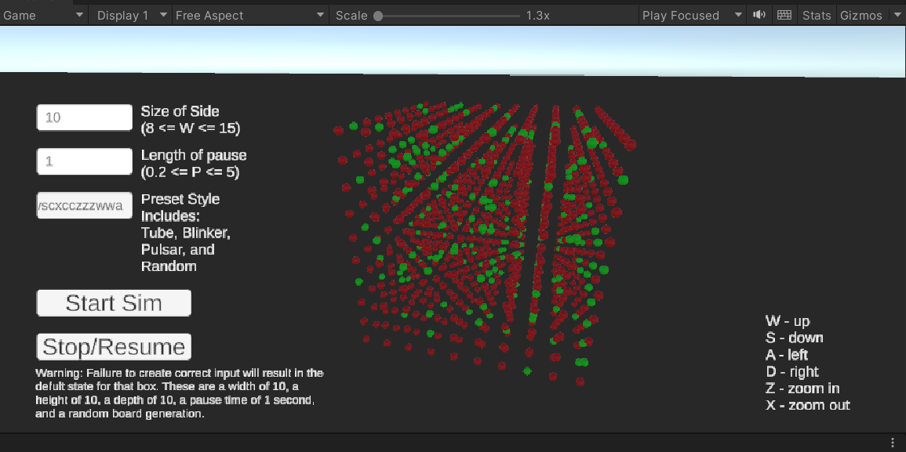
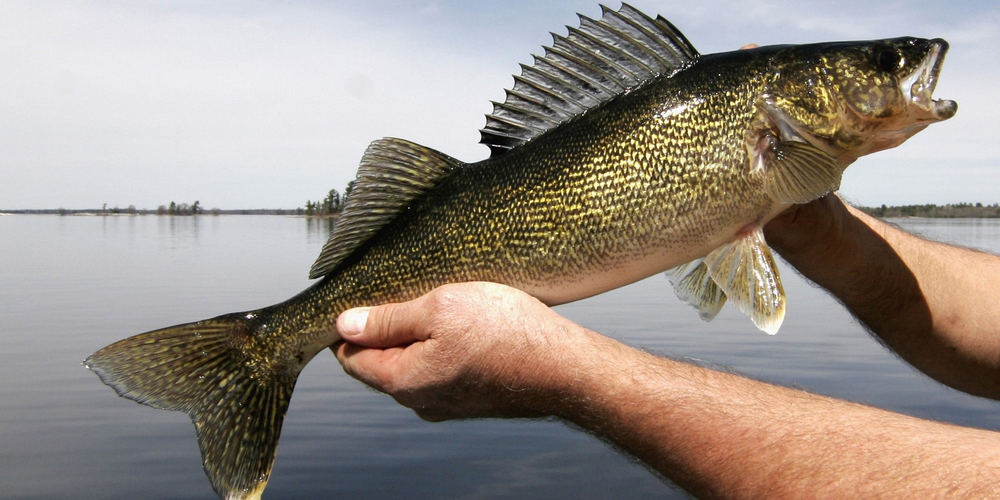

Data Science - Deep Learning - Artificial Intelligence
Portfolio
3D Game of Life

Walleye Census Evaluation

Closing Stocks Prediction Model
About
Hi There! I am a data scientist and software engineer, on the Dean's list every year at the University of East Stroudsberg.
I have a bachelors in Computer Science with a minor in math and certification in data science.
I hope to one day be on the leading edge of neural network deveolpment, programming robots,
or discovering hidden trends in something that really matters. To do this, I intend on proving my creativity in problem solving,
my dependability in getting the job done well, and cooperability with working in others to prove my worth.
Using the orginal rules of Joseph Conway's Game of Life, I developed an enviroment that can explore the mechanics
of node birth and death in an extra dimension. Using slightly edited rules, I was able to create a few patterns, including a combination
of blinker and a block.
Using a decade of fish censuses for populations on Lake Erie, I graphed the against the amount of
fisherman, other fish, and water conditions to discover a trend that looks largely similar to Fisheries-Induced Evolution
For a Kaggle Competition, we built a machine learning model that used hyperparameter optimization and CatBoost to predict
prices the market would close at, based on both data Kaggle gave us and columns that we dervived based on the information given.